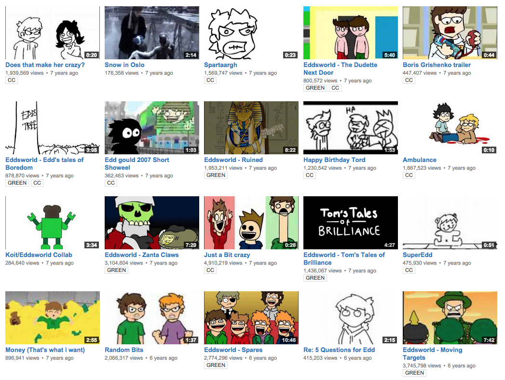
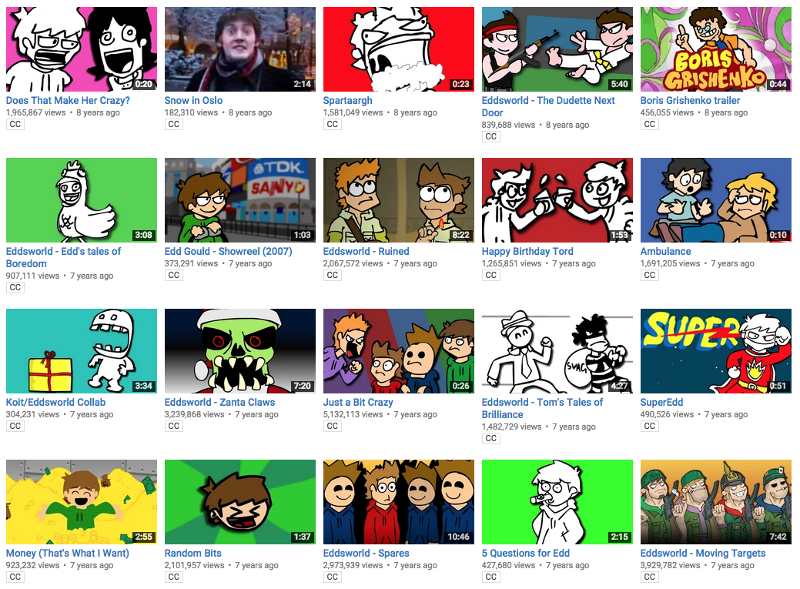
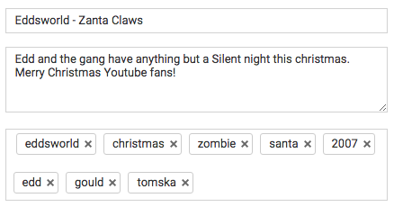
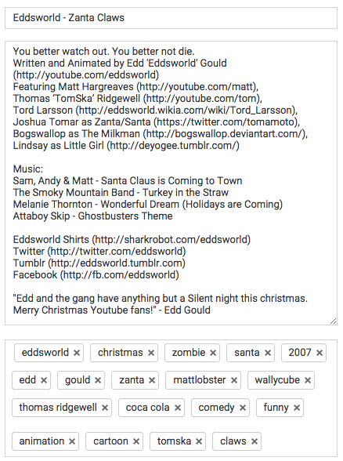

Hey Eddheads, Tom here.
I’m pretty excited to let you know that we just finished revamping all the old video thumbnails on Eddsworld to be a little prettier and more attention-grabbing. I’m sorry if this upsets a few people who feel like it’s removed some of the charm of the channel or even the memory of Edd (I hear that one a lot) but I hope you can appreciate why we’ve done it.
The Eddsworld channel was, professionally speaking, the biggest mess imaginable and while it was super charming in it’s own way that meant the it wasn’t bringing in as many new viewers as it could. Making sure the maximum amount of people can enjoy Edd’s work means a lot to all of us - not to mention the extra money it can help us raise for charity.
So yeah, subtitles are done, thumbnails are done, video descriptions/tags are halfway there. Eddsworld is gonna be the prettiest damn channel you ever did see. Now if you’ll excuse me I gotta back to turning video descriptions like this:

Into ones like this:
